Lovable, une plateforme qui vous permet de créer des logiciels avec l'IA en quelques minutes. Cette toute nouvelle fonctionnalité vous aide à créer des applications superbes qui ont réellement l'aspect et la sensation de professionnalisme en utilisant Figma. Si vous avez vu ma dernière vidéo, j'ai parlé d'une astuce qui vous aide à copier des composants d'interface utilisateur dans vos projets. Eh bien, cette nouvelle fonctionnalité vous aide à créer des applications entières en utilisant Figma et à les importer directement dans vos projets Lovable. Dans cette vidéo, je vais vous montrer comment faire cela. Cela devrait rendre votre processus de création d'applications beaucoup plus simple.
Interface & Outils : Figma, Navigateur web
Contenu textuel & Code : Maquettes d'applications mobiles, interfaces de design et outils de prototypage de Figma
Action / Démonstration : Présentation des fonctionnalités de design et de prototypage de Figma liées au développement d'applications
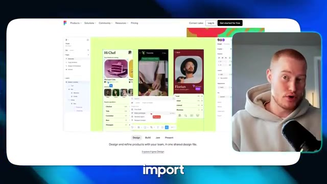
🔍 AgrandirImaginez ceci, vous avez un design magnifique que vous avez créé dans Figma et vous pouvez l'importer directement dans Lovable. Maintenant, vous pouvez modifier votre application à l'aide de l'IA avec Lovable, en ayant déjà un modèle complet qui a été fait pour vous. D'accord, entrons dans le vif du sujet. Très bien. Alors, première chose, je suis ici dans Figma. Si vous ne savez pas ce qu'est Figma, Figma est une plateforme qui vous permet de créer des interfaces utilisateur ou des sites Web d'apparence incroyable et vous permet de les personnaliser comme vous le souhaitez.
Interface & Outils : Lovable et Figma.
Contenu textuel & Code : Maquettes graphiques et interface de génération de code par IA. [DESC_IMAGE_3] Maquettes de design et interface de développement.
Action / Démonstration : Explications face caméra et analyse conceptuelle des marchés.
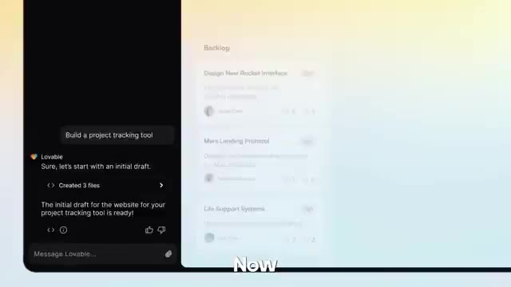
🔍 Agrandir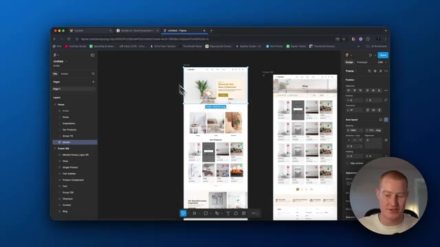
🔍 AgrandirVous pourriez utiliser beaucoup de, vous pourriez trouver différents modèles ici et essentiellement juste les coller dans vos applications pour les utiliser comme sorte d'infrastructure pour votre application web ou votre site web. Donc j'ai trouvé celui-ci que j'aime bien. Donc c'est pour une entreprise de meubles. Et comme vous pouvez le voir, nous avons ces différentes pages. Donc c'est un site web entier, n'est-ce pas ? Avec le paiement, nous avons un formulaire de contact, une page de blog, tout ça. Ce que je vais faire, c'est que je vais copier cette page d'accueil et la convertir en code, puis l'importer dans un projet Lovable. Et je vais le faire maintenant. Donc tout d'abord, ce que vous devez faire, c'est venir sur builder.io. Le lien pour ceci sera dans la description.
Interface & Outils : Interface de design Figma affichée dans un navigateur web avec panneau de calques et propriétés.
Contenu textuel & Code : Modèles de pages web (Accueil, Boutique, Panier, Checkout, Contact, Blog) pour une application ou un site e-commerce.
Action / Démonstration : Navigation et exploration visuelle des différents écrans et templates de design dans le logiciel Figma.
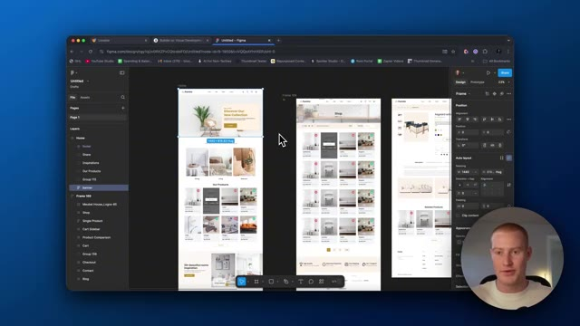
🔍 Agrandir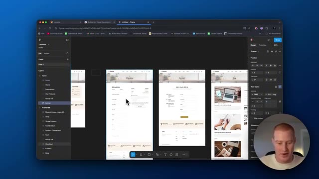
🔍 Agrandir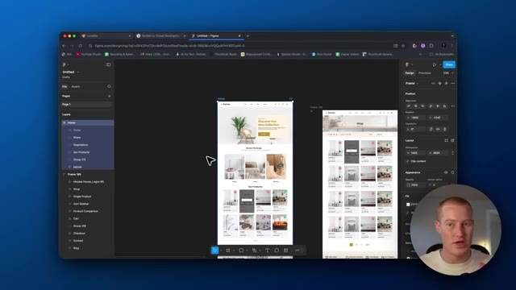
🔍 AgrandirEssentiellement, inscrivez-vous avec ceci et vous devez télécharger un tuteur. Alors allez sur l'application et ensuite ce que vous allez faire, c'est que vous allez venir et cliquer sur obtenir le plugin Figma. En gros, une fois que vous avez ça connecté à votre Figma, tout ce que vous avez à faire, c'est de revenir sur votre Figma, de cliquer sur les composants exacts ou la page que vous voulez copier dans Lovable pour ceci.
Interface & Outils : Navigateur web et logiciel Figma
Contenu textuel & Code : Tableaux de bord, pages de plugins et maquettes de design UI/UX
Action / Démonstration : Navigation sur Builder.io, consultation d'un plugin Figma et visualisation de maquettes de design dans Figma
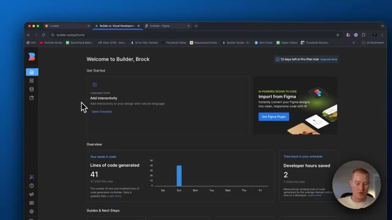
🔍 Agrandir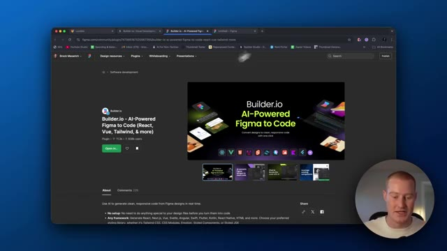
🔍 Agrandir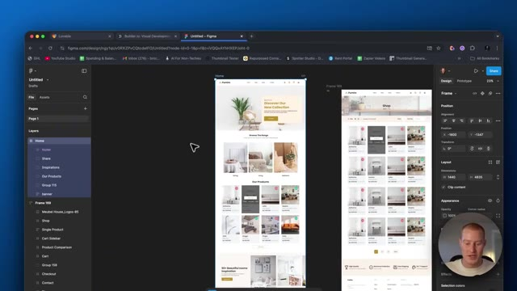
🔍 AgrandirJe veux que ça devienne tout simplement la page d'accueil. Donc essentiellement, il est vraiment important que vous veniez cliquer sur auto layout. De cette façon, ce sera disposé correctement. Et ensuite, la prochaine chose que nous voulons faire, c'est de venir ici et de cliquer sur ce plugin builder.io. Donc, cliquez sur notre plugin ici que nous venons de télécharger. Et ensuite, ce que nous allons faire, c'est que nous allons laisser cela en mode facile pour l'exportation.
Interface & Outils : Logiciel de design Figma et interface de plugin Builder.io.
Contenu textuel & Code : Panneau des calques, options d'Auto Layout, propriétés de design et fenêtre de prévisualisation d'exportation de plugin.
Action / Démonstration : Manipulation des calques de design et ouverture du plugin Builder.io pour exporter la mise en page.
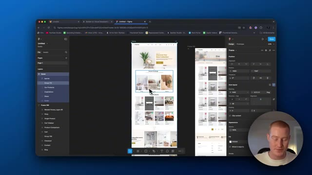
🔍 Agrandir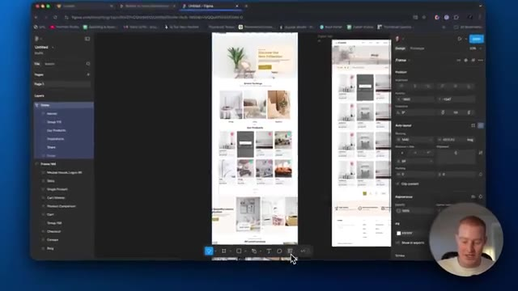
🔍 Agrandir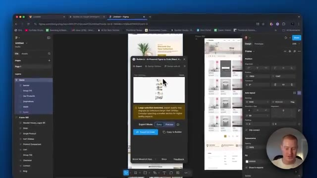
🔍 AgrandirAssurez-vous d'avoir la bonne page que vous voulez copier sur Lovable. Et nous allons l'exporter en code. Donc essentiellement, cela convertit ce design sur Figma en code. Et ensuite, je vous montrerai comment vous pouvez facilement l'importer dans votre application Lovable de manière native directement depuis Figma. Très bien. Et donc ce que vous allez voir maintenant, c'est que vous allez voir les mises en page. Vous aurez deux options ici et nous devons sélectionner l'option de mise en page qui a meilleure allure et qui, selon nous, sera la meilleure à importer dans Lovable. Laissez-moi donc regarder rapidement tout ça. Alors, pendant que je regarde tout ça,
Interface & Outils : Figma, Plugin Builder.io AI-Powered Figma to Code
Contenu textuel & Code : Fenêtre de conversion de design Figma vers du code (React, Vue, Tailwind) avec sélection des versions.
Action / Démonstration : Conversion d'un design Figma en code à l'aide d'une extension d'intelligence artificielle.
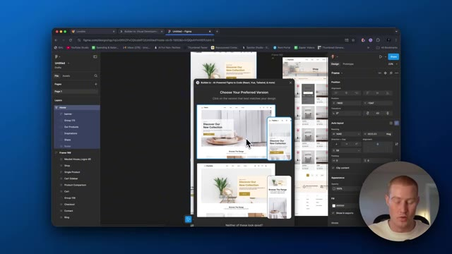
🔍 Agrandircelui-ci a l'air bien. Cependant, on dirait qu'ici, il y a une sorte d'erreur où c'est comme, c'est comme si le logo ne s'affichait pas correctement. Et donc sur celui-ci, celui-ci a l'air bien. a l'air super, ok, alors je vais continuer et avancer avec celui-ci, donc je clique sur celui-ci, et ensuite, ce qu'il nous faut faire, c'est cliquer sur ouvrir dans Lovable, ça va maintenant commencer à exporter ceci vers notre projet Lovable, et ensuite nous pourrons commencer à modifier cela exactement comme nous le ferions avec n'importe quel projet Lovable, laissez-moi lui donner une seconde pendant que ça charge ici, pendant que ça charge en fait, désolé, je veux faire une, euh, je veux mentionner une chose, donc vous avez peut-être vu ma vidéo précédente où je passe en revue
Interface & Outils : Figma, Builder.io plugin, Lovable
Contenu textuel & Code : Options de design de versions, barre de progression de conversion de code (Analyzing exported code, Generating React components)
Action / Démonstration : Sélection d'une version de design et lancement de la conversion du projet Figma en code Lovable / React
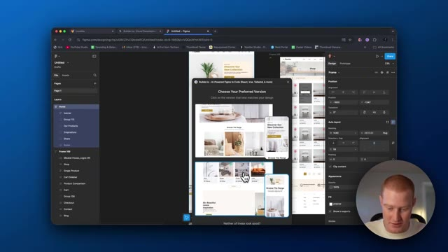
🔍 Agrandir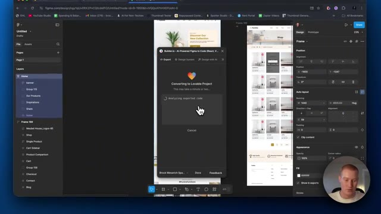
🔍 Agrandir24th.dev afin de copier et coller différents composants d'interface utilisateur dans vos applications Lovable. J'adore cette application web. C'est vraiment un cas d'usage tellement cool. Cette vidéo a reçu beaucoup de, beaucoup de gens ont adoré ça et en ont retiré énormément de valeur. Vous vous dites donc peut-être, eh bien, est-ce que cela remplace ce genre de truc que j'avais trouvé ? Et la réponse est non, parce que Figma est vraiment doué pour créer des sortes de cadres complets pour vos sites web ou pour vos applications. Mais si vous voulez quand même trouver de l'inspiration via des composants d'interface utilisateur, vous pouvez facilement les importer dans vos applications que vous avez construites sur Figma puis chargées dans Lovable. Donc tous ces outils fonctionnent vraiment très bien
Interface & Outils : Figma, Builder.io plugin, navigateur web.
Contenu textuel & Code : Fenêtre modale affichant "Converting to Lovable Project" avec des étapes de chargement : "Analyzing exported code", "Generating React components", "Generating more React components", "Making them pixel-perfect".
Action / Démonstration : Conversion de maquettes de design Figma en composants de code pour une application Lovable via le plugin Builder.io.
ensemble. Et c'est pourquoi je suis si enthousiaste à l'idée de cette nouvelle intégration Figma, ainsi que de ces autres types d'intégrations qui arrivent pour Lovable. Alors ensuite, laissez-moi cliquer à l'intérieur de Lovable. Lançons ce projet. Et comme n'importe quel projet Lovable, vous pouvez voir qu'il va commencer à écrire le code parce que builder.io a converti cela en code qui pouvait facilement être importé dans Lovable. Alors donnons-lui une seconde et jetons un coup d'œil au résultat ici. D'accord, c'est parti.
Interface & Outils : Figma, Navigateur Web, Interface Lovable
Contenu textuel & Code : Pop-up de lancement de projet Builder.io sur Figma et interface de développement Lovable avec du code source React/TypeScript.
Action / Démonstration : Navigation et lancement d'un projet Figma vers Lovable.
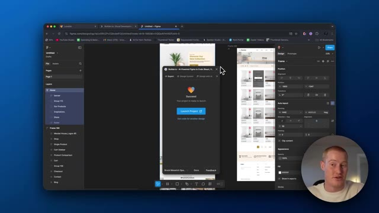
🔍 Agrandir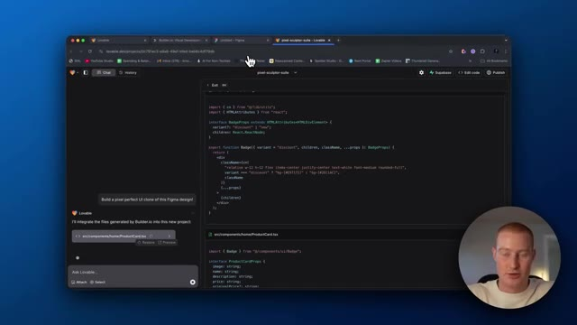
🔍 AgrandirIl semble que notre site soit en ligne et opérationnel. Ça a l'air super. Ça ressemble exactement à ce que c'était dans Figma. Vous pouvez voir que nous avons tous ces produits ici. Nous avons ces différentes catégories que nous pouvons parcourir. Évidemment, cette application ou ce site web, ces boutons et tout le reste ne sont pas fonctionnels. Nous devons donc aller dans Lovable et rendre tout cela fonctionnel.
Interface & Outils : Navigateur web affichant l'aperçu d'un site de e-commerce de meubles développé via Lovable / Figma.
Contenu textuel & Code : Interface utilisateur d'un site web de vente de meubles (logo Furniro, navigation, catégories Dining, Living, Bedroom, produits avec prix en roupies indonésiennes). [DESC_IMAGE_3] Le présentateur navigue et fait défiler la page d'accueil du site web pour en démontrer le fonctionnement et le design.
Action / Démonstration : Explications face caméra et analyse conceptuelle des marchés.
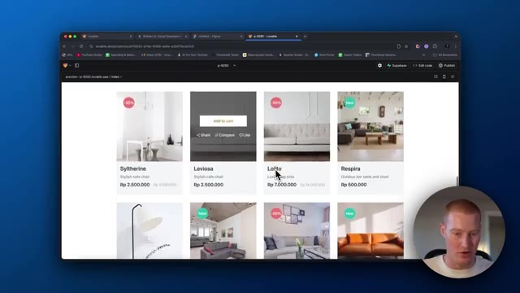
🔍 Agrandir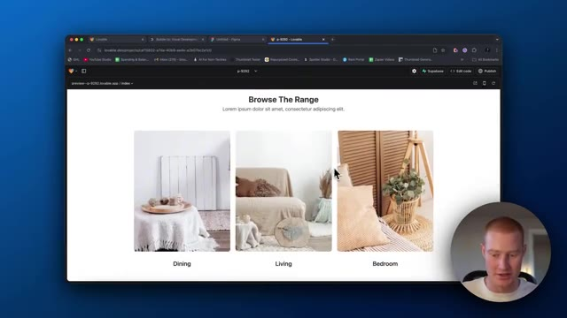
🔍 Agrandir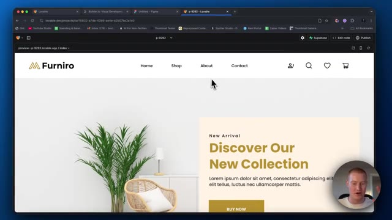
🔍 AgrandirMais jusqu'à présent, ça a l'air super. Très bien, les gars, voilà. C'est la nouvelle intégration Figma dans Lovable. Et une chose que je tiens à mentionner, c'est ceci : au moment où je tourne cette vidéo, cette fonctionnalité est en fait déjà en ligne. J'ai eu un accès anticipé grâce à l'équipe de Lovable pour tester cela et vous le présenter, puisque vous avez vraiment beaucoup aimé mes vidéos sur cette plateforme. Donc, une chose que je tiens à souligner, c'est qu'il y a quelques erreurs avec ça. Ce n'est pas parfait à chaque fois ; d'après ce que j'ai compris, ils travaillent pour faire en sorte que cette intégration fonctionne de manière beaucoup plus fluide. De cette façon, à chaque fois que vous avez un modèle Figma ou quelque chose que vous voulez importer dans
Interface & Outils : Figma (navigateur web)
Contenu textuel & Code : Maquette de page web avec des visuels de produits, des sections de texte et un panneau de propriétés à droite.
Action / Démonstration : Navigation et présentation de la maquette design dans l'interface Figma.
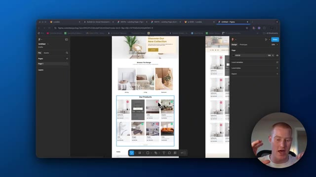
🔍 Agrandirvotre application, elle est pratiquement impeccable à chaque fois. Cependant, nous n'en sommes pas encore là. Vous pourriez donc rencontrer quelques petits problèmes lors de vos tests. Mais voilà, les gars, merci de nous avoir suivis. N'oubliez pas de laisser un pouce bleu, de commenter, de vous abonner. J'espère que vous avez apprécié cette astuce. J'espère qu'elle vous apportera de la valeur. Et j'espère que cela changera un peu votre façon de créer des applications web grâce à l'IA. Cela étant dit, merci beaucoup. Et je vous dis à très bientôt dans la prochaine vidéo.
Interface & Outils : Figma (dans un navigateur web)
Contenu textuel & Code : Maquette de site e-commerce (section héros, catégories "Browse The Range", section "Our Products" avec des images de meubles) et panneau latéral de design de Figma à droite.
Action / Démonstration : Navigation et présentation de la maquette de design sur l'interface Figma.
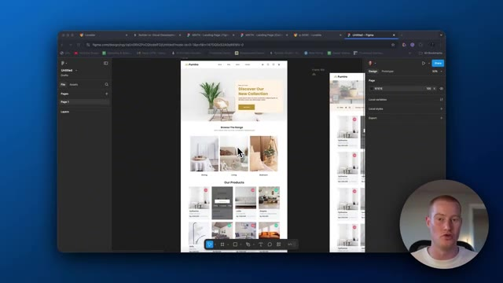
🔍 Agrandir